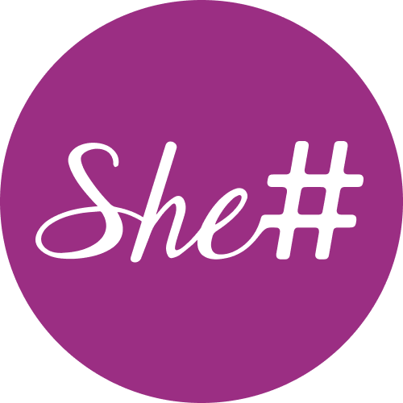

Ask the site
Chatbot on our website answers questions about events, mentorship, and how to get involved — using up-to-date page data

NZ non-profit · STEM
Four systems. One mission. People still decide.
Chatbot on our website answers questions about events, mentorship, and how to get involved — using up-to-date page data
Suggests mentor–mentee pairs and ranks volunteer applications; our team reviews and approves every decision
Event Bot reads planning chats and drafts website event updates. Also posts funding tips and application screening results
Guided workflows: pull event details from Slack onto the website, and draft our monthly newsletter for a human editor